앵커 카탈로그 · Anchor Catalog
제품 사진을 눌러 사양 · 품번 · 용도 · 호환 기구를 확인하세요. 종류와 수술로 걸러볼 수 있습니다.
ICONIX · All-suture Anchor
1.4mm / 2.3mm — 실(sheath)만으로 고정, Pilot hole 최소
ICONIX SPEED · ICONIX Knotless
Self-punching과 Knotless 확장 라인
PEEK · Biocomposite Anchors
AlphaVent · Omega · ReelX — Screw-in · Knotless
꼭 알아야 할 용어 (Medical terms)
| 용어 | 뜻 |
|---|---|
| Rotator Cuff Repair (RCR) | 회전근개(어깨 힘줄) 파열 봉합. 상완골 Greater tuberosity(대결절)에 앵커를 박고 힘줄을 끌어다 묶음. 앵커 소비가 가장 많은 수술. |
| Single-row / Double-row | 앵커를 한 줄로 박으면 Single-row, 안쪽(Medial row) + 바깥쪽(Lateral row) 두 줄이면 Double-row(Suture bridge). Medial = AlphaVent·ICONIX 3·SPEED, Lateral = Omega 같은 knotless가 흔한 조합. |
| Bankart Repair | 어깨 탈구 후 찢어진 Labrum(관절와순)을 Glenoid(관절와) 앞쪽에 다시 붙이는 수술. 뼈가 단단하고 좁아 작은 앵커(ICONIX 1.4 / 2.3 2줄) + Straight·Curved Guide + Drill 세트 사용. |
| Remplissage | 탈구 때 생긴 상완골 머리의 홈(Hill-Sachs)에 힘줄을 채워 넣는 시술. Bankart와 같이 하는 경우 많음. |
| SLAP Repair | 관절와순 위쪽(Superior Labrum) 파열 봉합. 1.4mm ICONIX 같은 작은 앵커. |
| Biceps Tenodesis | 이두근 힘줄을 뼈에 고정하는 수술. |
| All-suture anchor | 금속·플라스틱 몸체 없이 실 뭉치만으로 고정. 구멍이 작아(1.4~2.3mm) 뼈 손상 적음. = ICONIX. |
| Knotless | 의사가 관절경 안에서 매듭을 묶지 않아도 되는 방식. 수술 시간 단축. = Omega, ReelX STT, AlphaVent Knotless. |
| Pilot hole | 앵커 넣기 전 뚫는 구멍. Drill(회전), Awl(말렛으로 쳐서), Tap(나사산 내기), Punch-tap으로 만듦. Self-punching은 이 과정 생략. |
| Guide (Drill guide) | 뼈에 대고 그 안으로 Drill/Awl/앵커를 넣는 관. Straight · 12° · 25°(Curved) 각도, 1.4mm용과 2.3mm용이 따로 있음. |
| #2 Force Fiber / XBraid / TT | 실 종류. #2 = 일반 굵기 봉합사, TT(Tape) = 납작한 테이프형(1.2/1.4/1.8/2.0mm)으로 힘줄을 넓게 눌러줌. "3줄(3 strands)" = 실이 3가닥 걸려있음. |
| Needle(s) | 실 끝에 바늘이 달려 나오는 버전. 오픈 수술·Small joint에서 사용. |
| PEEK | 방사선 투과 플라스틱 소재. MRI 영상 방해 없음. AlphaVent·Omega·ReelX 몸체 소재. |
ICONIX (All-suture anchor)
Official brochure images
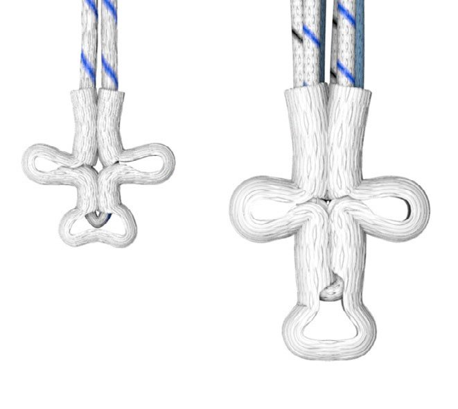
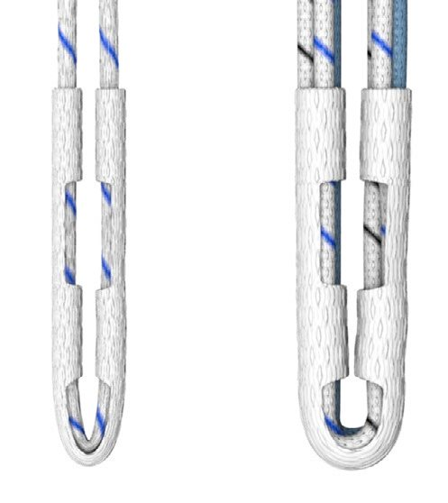
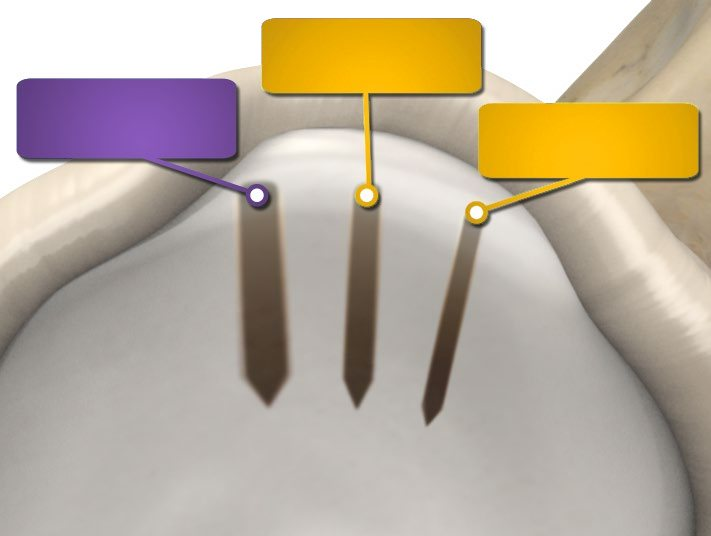
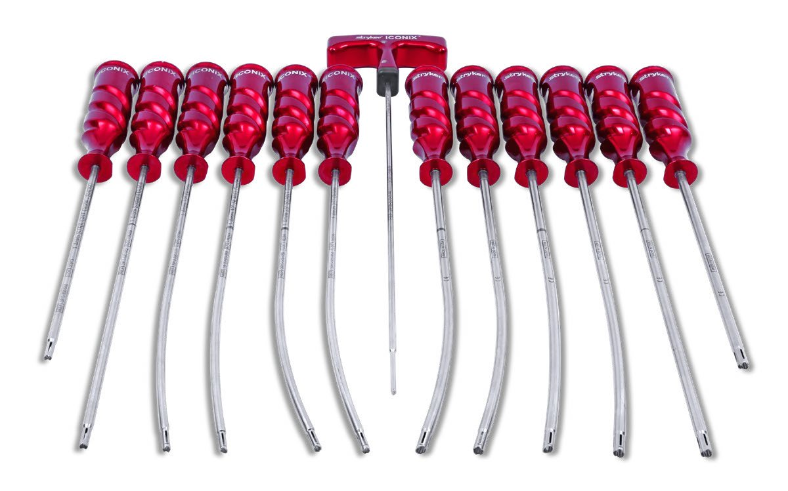
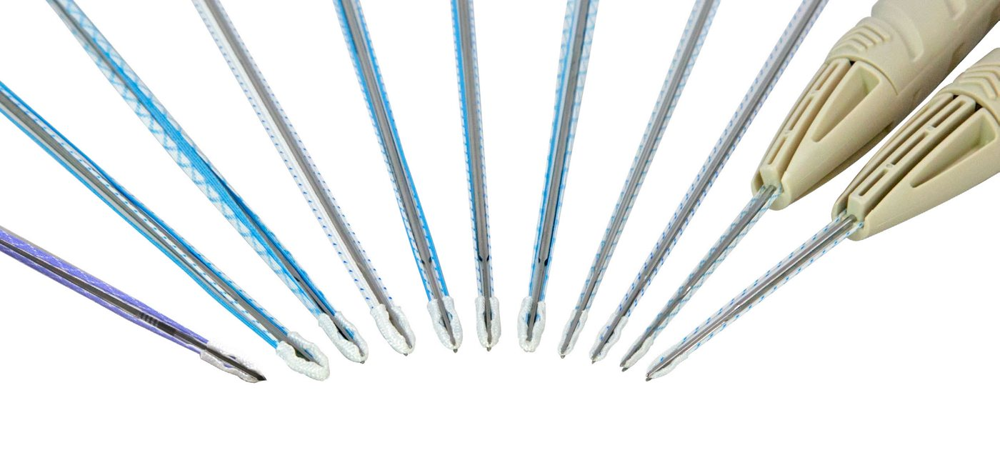
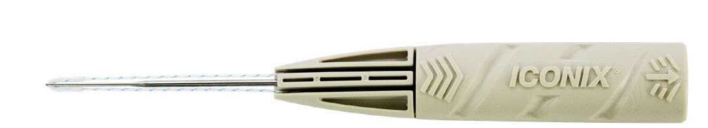
| 코드 | 품명 | 사이즈 | 실 구성 | 주 용도 |
|---|---|---|---|---|
| 3910500512 | ICONIX 1 1.4MM ANCHOR WITH 1 | 1.4 | #2 Force Fiber 1줄 | Bankart, SLAP |
| 3910500312 | ICONIX 1 TT 1.4 W1.2MM XBRAID | 1.4 | 1.2mm XBraid TT 1줄 | Bankart 등 |
| 3910500412 | ICONIX NEEDLES 1.4MM | 1.4 | Needle 부착 | Small joint, Open |
| 3910500212 | ICONIX 1.4 W NEEDLES XBRAID | 1.4 | XBraid + Needle | Small joint, Open |
| 3910500522 | ICONIX 2 2.3MM ANCHOR WITH 2 | 2.3 | #2 Force Fiber 2줄 | Bankart, RCR |
| 3910500322 | ICONIX 2 TT W 2.0MM XBRAID | 2.3 | 2.0mm TT 2줄 | RCR |
| 3910500532 | ICONIX 3 2.3MM ANCHOR W 3X2 | 2.3 | #2 Force Fiber 3줄 | RCR(Cuff) Medial row |
| 3910500525 | ICONIX 25 2.3MM ANCHOR W 2X5 | 2.3 | 품명 기준 2X5 | RCR (실 사양 확인 필요) |
| 3910500422 | ICONIX NEEDLE 2.3MM ANCHOR | 2.3 | #2 Force Fiber + Needles | Elbow·Open 수술 |
ICONIX 기구 매칭 (사이즈 꼭 맞출 것!)
| 기구 | 1.4mm 앵커용 | 2.3mm 앵커용 | 메모 |
|---|---|---|---|
| Disposable Drill | 3910500568 | 3910500569 | 일회용 (Disposable) |
| Reusable Drill | 3910500571 | 3910500573 | |
| Awl (말렛으로 침) | 없음 | 3910500574 | 1.4mm는 Awl 없음 → Drill 필수 |
| Straight Guide Short | 3910500550 | 3910500551 | 품명이 거의 같음 → 코드로 구분 가이드 몸통에 "2.3mm 25° Guide"처럼 각인 |
| Straight Guide | 3910500552 | 3910500555 | |
| 12° Guide | 3910500553 | 3910500556 | |
| 25° Guide (Curved) | 3910500554 | 3910500557 | |
| Slant 12° / 25° Guide | 3910500558 ~ 561 (사이즈별) | 특수 각도 | |
| Obturator (Pencil / Trocar tip) | 3910500562 ~ 565 | 가이드 안에 넣어 위치 잡는 심 | |
ICONIX SPEED (Self-punching all-suture, 2.3mm)
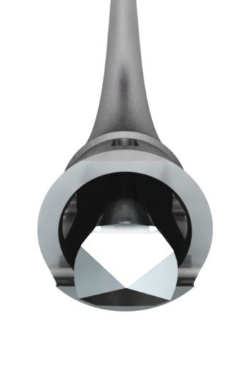
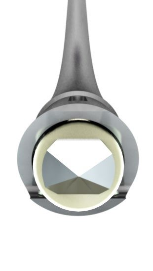
| 코드 | 품명 | 실 구성 | 비고 |
|---|---|---|---|
| 3910500931 | ICONIX SP 2.3MM 3X 1.2MM TT | 1.2mm XBraid TT 3줄 (Triple loaded) | 가장 많이 쓰는 SPEED |
| 3910500920 | ICONIX SP 2.3MM 2X2.0TT | 2.0mm XBraid TT 2줄 | |
| 3910500922 | ICONIX SP 2.3MM 2X #2 FF | #2 Force Fiber 2줄 | |
| 3910500921 | ICONIX SP 2.3MM 1X1.2 1X2.0 TT | 1.2mm + 2.0mm TT (Combo) |
AlphaVent (PEEK screw-in anchor)
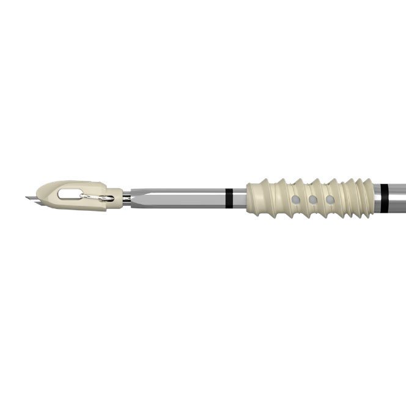
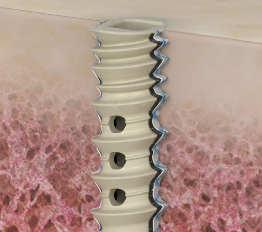
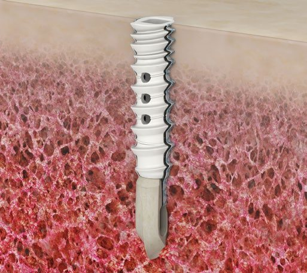
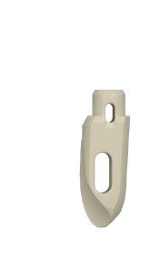
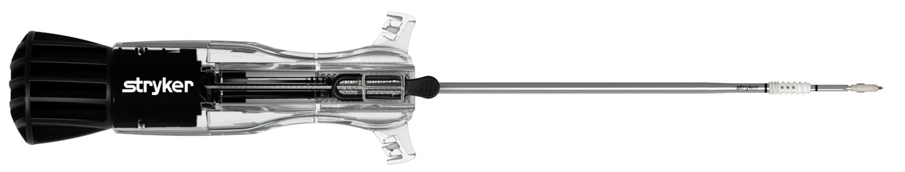
주 용도: Rotator cuff repair (특히 Double-row의 Medial row), 그 외 Bankart·Biceps tenodesis 등 허가.
| 코드 | 사이즈 | 실 구성 | 비고 |
|---|---|---|---|
| 3910947032 | 4.75mm | #2 XBraid 3줄 | "4.75 ALPHAVENT 3X #2" · 대표 구성 |
| 3910947031 | 4.75mm | 1.4mm XBraid TT 3줄 | "4.75 ALPHAVENT 3X 1.4 TT" |
| 3910947022 / 947021 | 4.75mm | #2 2줄 / 1.4 TT 2줄 | |
| 3910947132 / 947131 | 4.75mm | 3줄 + Needles | |
| 3910955032 | 5.5mm | #2 XBraid 3줄 | "5.5 #2" |
| 3910955031 / 955022 | 5.5mm | 1.4 TT 3줄 / #2 2줄 | |
| 3910965032 / 965031 | 6.5mm | #2 3줄 / 1.4 TT 3줄 | 뼈가 약할 때 큰 사이즈 |
AlphaVent 기구 (Omega와 공용 많음)
| 코드 | 기구 | 언제 |
|---|---|---|
| 3910947201 | 4.75mm AlphaVent & Omega Awl | 기본 (해면골·보통 뼈) |
| 3910947200 | 3.9mm Omega & 4.75mm AlphaVent Awl | |
| 3910947202 | 4.75mm AlphaVent & Omega Drill | 단단한 뼈(Hard bone) |
| 3910947207 / 947208 | 4.75mm Tap / Punch-tap | 나사산 미리 내기 |
| 3910947203 / 947209 | 5.5mm Drill / 5.5mm Tap | 5.5mm 앵커용 |
| 3910947212 | Drill guide | Open 수술용 |
Omega (Knotless, eyelet + screw)
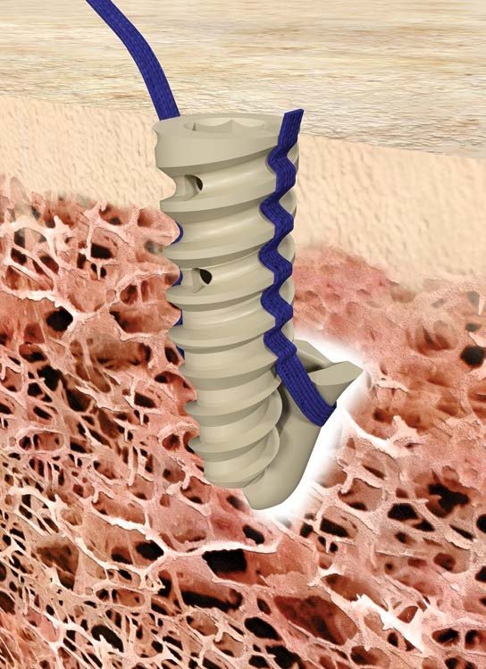
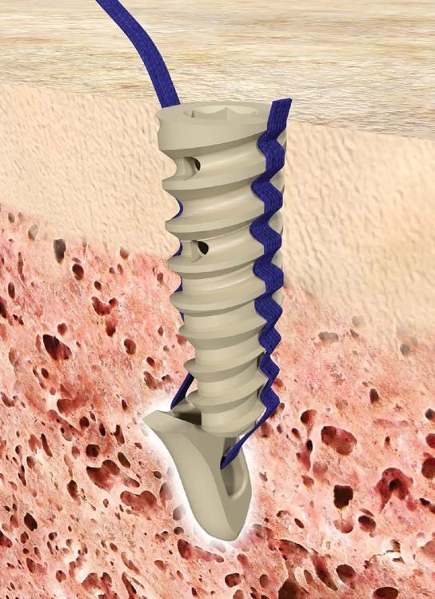
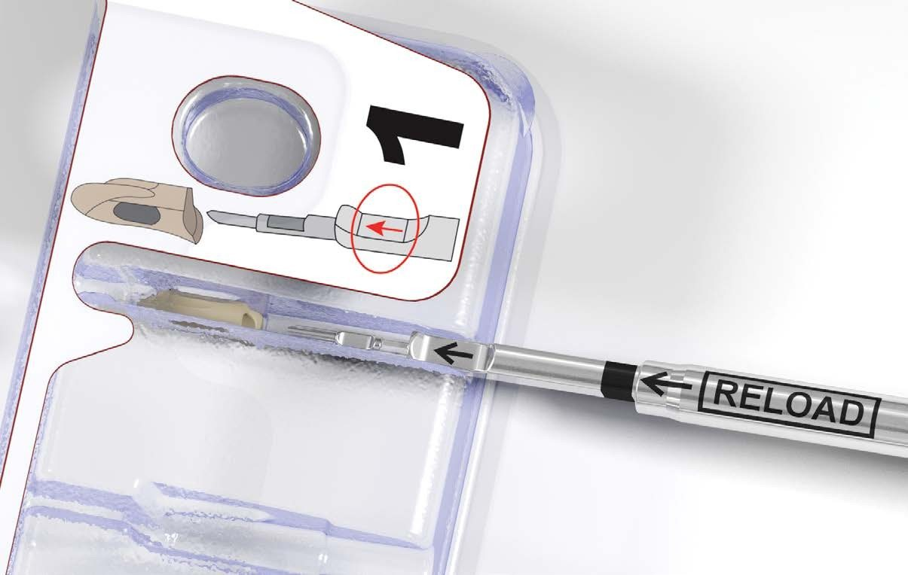
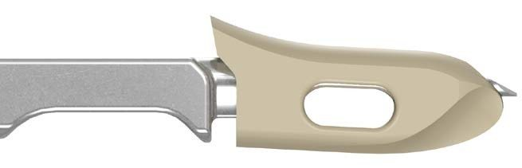
| 코드 | 구성 | 기구 (Drill / Tap / Awl) |
|---|---|---|
| 3910500391 / 392 | 3.9mm Single / Double-Double | 3910500393 / 394 / 395 |
| 3910500471 / 472 | 4.75mm Single / Double-Double | 3910500473 / 474 / 475 |
| 3910500652 / 653 | 6.5mm | — |
ReelX STT (Knotless tensionable)
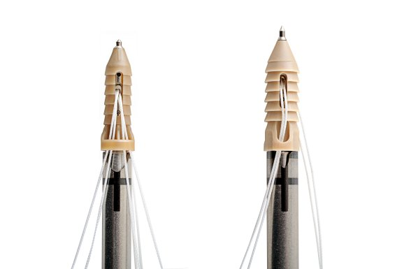
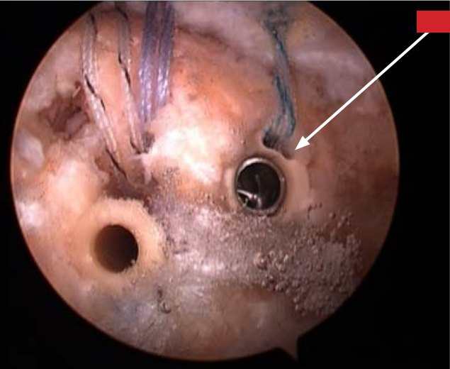
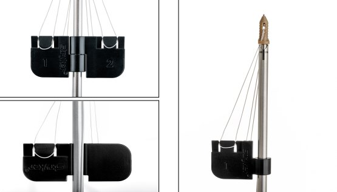
4.5mm · 5.5mm
4.5mm: working #2 suture 최대 4 tail(Pull tab 2개 사용) · 5.5mm: 최대 2 tail(Pull tab 1개)
Incremental tensioning
Black knob을 시계 방향으로 최소 1회전, 최대 3회전. 60° 회전마다 locking point, 약 1.5mm의 봉합사가 감겨 들어갑니다.
Pilot hole 기구
6.5mm BioZip Drill (3910-004-040, 4.0×13.5mm) 등 — 단단한 뼈에 권장 (브로셔 기재)
| 코드 | 품명 | 비고 |
|---|---|---|
| 3910600062 | REELX STT 4.5MM KNOTLESS | 4.5mm 주력 |
| 3910600060 | STRYKER REELX STT 5.5MM | 공급 중단 → 4.5mm로 대체 (담당자 확인) |
수술별 기구 세트 구성 가이드 (Instrument set guide)
| 수술 | 앵커 | 같이 보낼 기구 |
|---|---|---|
| Bankart / SLAP | ICONIX 1 (1.4) 또는 ICONIX 2 (2.3, 2줄) | Straight Guide + 25° Curved Guide + Drill (3종 1세트) 1.4mm: 552 + 554 + 568 · 2.3mm: 555 + 557 + 569 |
| Rotator Cuff (ICONIX) | ICONIX 3 (3줄) / ICONIX 2 | 2.3mm Guide + Awl (551 또는 555 + 574) · 단단한 뼈면 569 Drill 추가 |
| Rotator Cuff (SPEED) | ICONIX SP 931 / 920 / 922 | Drill 불필요 (Self-punching) |
| Rotator Cuff Medial row | AlphaVent 4.75 / 5.5 | 4.75 Awl 3910947201 (+ Hard bone: Drill 947202 / Tap 947207) |
| Rotator Cuff Lateral row | Omega 3.9 / 4.75 | Self-punching · 필요 시 Omega Drill/Tap/Awl |
캐뉼라 (참고, 앵커 아님)
| 코드 | 품명 | 용도 |
|---|---|---|
| 3910075800 | 8.0X75MM DRI-LOK | 관절경 작업통로(Cannula). 앵커·봉합사 통과용 |
| 3910075650 | 6.5X75MM DRI-LOK | 작은 통로 |
| 3910080050 | CANNULA, 8.0MM X 50MM | 짧은 8.0mm 캐뉼라 |
수술 종류별 사용 가능한 앵커
허가 적응증(Stryker IFU·FDA 510(k)) + 국내 사용 예 기준. 실제 선택은 원장님 술기·뼈 상태에 따라 다릅니다.
| 수술 (Procedure) | ICONIX 1.4mm | ICONIX 2.3mm | ICONIX SPEED | AlphaVent | Omega | ReelX STT | 포인트 |
|---|---|---|---|---|---|---|---|
| Shoulder (어깨) | |||||||
| Rotator Cuff Repair – Single-row | – | ● (3줄) | ● | ● | ○ | ○ | 작은 파열은 ICONIX 3·SPEED 1~2개로 마무리 |
| Rotator Cuff Repair – Double-row Medial | – | ● | ● | ● | – | – | 실 2~3줄 걸린 앵커 → 힘줄 안쪽 고정 |
| Rotator Cuff Repair – Double-row Lateral | – | – | – | ○ (Knotless) | ● | ● | Medial 실을 모아 Knotless로 바깥쪽 고정 (Suture bridge) |
| Bankart Repair (Anterior instability) | ● | ● (2줄) | – | ○ | – | ○ | Glenoid가 좁고 단단 → 작은 앵커 + ST·Curved Guide + Drill |
| Remplissage (Hill-Sachs) | ○ | ● | ○ | ○ | – | – | Bankart와 같이 시행하는 경우 많음 |
| SLAP Repair | ● | ○ | – | – | – | – | Superior labrum, 작은 앵커 선호 |
| Posterior Labral Repair | ● | ○ | – | – | – | – | 후방 불안정성 |
| Biceps Tenodesis | – | ● | ○ | ● | ○ | ○ | Suprapectoral 위치, 관절경 or Open |
| AC Joint Separation Repair | – | ○ | – | ○ | – | – | 보조 고정용 |
| Elbow (팔꿈치) | |||||||
| Common Extensor Repair / Nirschl procedure (Tennis elbow) | ○ | ● (Needle) | – | ○ | – | – | Needle 버전이 편리 (Open 수술) |
| Distal Biceps / UCL Repair | ○ | ● | – | ○ | – | – | Open 수술 → Needle 버전 편리 |
| Hip (고관절) | |||||||
| Acetabular Labral Repair | ● | ○ | – | – | – | – | 관절와순 봉합, 작은 앵커 |
| Gluteus Medius Repair / Capsular Repair | ○ | ● | ○ | ● | ○ | ○ | 힘줄 봉합은 Cuff와 비슷한 구성 |
| Knee (무릎) | |||||||
| MPFL Repair / Reconstruction | ○ | ● | – | ○ | – | – | 슬개골 탈구, Patella 쪽 고정 |
| Meniscal Root Repair | ○ | ○ | – | – | – | – | Transtibial 방식이 많아 앵커는 선택적 |
| MCL / LCL / Patellar·Quadriceps Tendon Repair | – | ● | – | ● | ○ | – | 굵은 힘줄 → 큰 앵커·여러 줄 |
| Foot & Ankle (발·발목) | |||||||
| Lateral Ankle Stabilization (Broström) | ● | ● | – | ○ | – | – | ATFL 봉합, 작은 앵커 1~2개 |
| Achilles Tendon Repair | – | ○ | – | ● | ● | – | Calcaneus에 Double-row (AlphaVent + Omega) |
| Hallux Valgus / Midfoot | ● | ○ | – | ○ | – | – | Small joint |
| Hand & Wrist (손·손목) | |||||||
| Thumb UCL (Skier's thumb) / Scapholunate | ● (Needle) | ○ | – | – | – | – | 가장 작은 1.4mm + Needle |
빠르게 고르는 법
- 좁고 단단한 뼈 (Glenoid, 손·발 작은 관절) → ICONIX 1.4mm + Drill
- 힘줄을 뼈에 넓게 붙임 (Rotator cuff, Gluteus) → ICONIX 3 / SPEED / AlphaVent (실 3줄)
- 매듭 없이 바깥쪽 줄 (Double-row lateral) → Omega / ReelX STT
- Open 수술 (Elbow, Hand, Ankle) → Needle 버전 (ICONIX Needle 1.4 / 2.3)
- 뼈가 약함 (고령 Osteoporosis) → 큰 사이즈 (AlphaVent 5.5 / 6.5, Omega 6.5)
공식 자료 · Official Resources
Stryker.com 공개 브로셔 (영문)
ICONIX All-suture Anchor
Platform Brochure (PDF)
Instability Repair Brochure (PDF)
ICONIX Knotless Brochure (PDF)